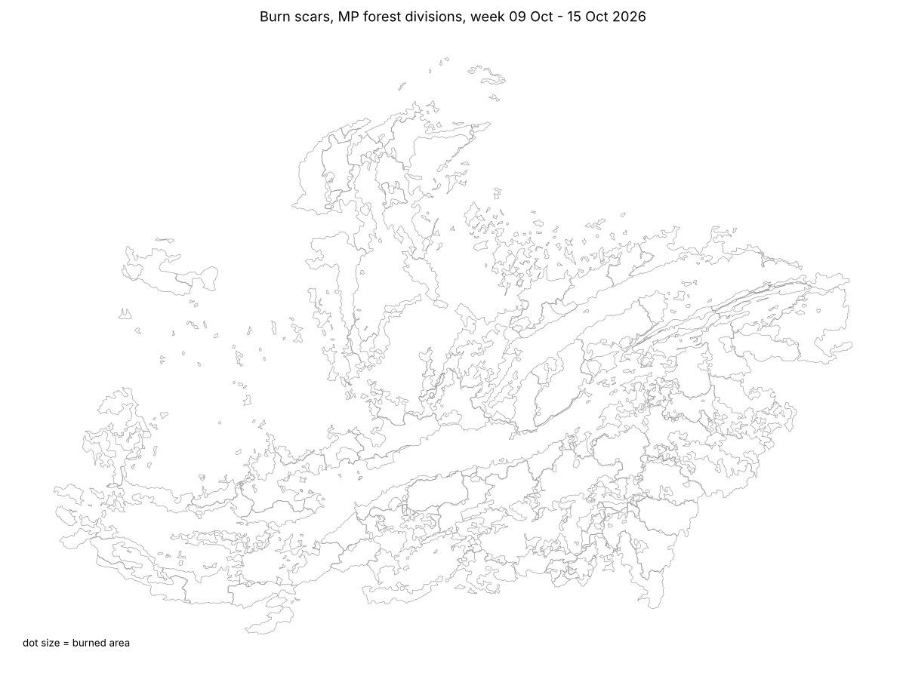

Forest fire burn scars, Madhya Pradesh: week 09 Oct to 15 Oct 2026
Outside the fire season (15 Feb to 15 Jun). Season figures are for 2026.
- 0 forest fires were alerted this week. 0 already show a burn scar on satellite photos, covering 0 ha. 0 are still waiting for a clear photo (usually 3 to 10 days).
- Season so far (from 15 Feb): 0 ha burned. The normal for this date will appear once the 2017-25 history run is finished.
- Not counted above: 109 burns before the season (Oct to 14 Feb, mostly planned burning, 1,495 ha) and 0 small daytime 15-28 Feb burns that look planned (0 ha). They are listed in planned_burns.csv.
- A fire with no scar is not a false alert: small fires and fires under thick canopy often leave no visible scar.
- Areas are from 20-30 m satellite photos: typically about 9% of an outline is not burned and about 20% of nearby burned ground is missed.

By division
| Division |
Fires this week |
Scars |
Burned ha this week |
Burned ha this season |
Normal by this date |
Season vs normal |
|
|
|
|
|
|
|
Largest fires this week
| Date |
Division |
Range |
Beat |
Burned ha |
Location |
|
No scars confirmed yet for this week's fires |
|
|
|
|